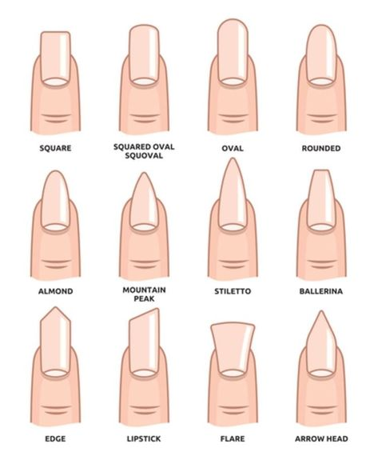

Karène VENG
Les différentes formes d'ongles

Top 5 des meilleurs couleurs de vernis
- blanc/noir
- rouge (bordeau, clair, sang)
- bleu (navy, ciel, turquoise)
- rose
- beige
Tutoriel pour faire ses ongles soi-même
Pour apprendre à faire ses ongles, voir :
Matériaux à acheter ↓
Shop avec les matériaux nécessaires
Pour plusieurs idées, clique sur le lien ↓
Clique ici pour plusieurs idées